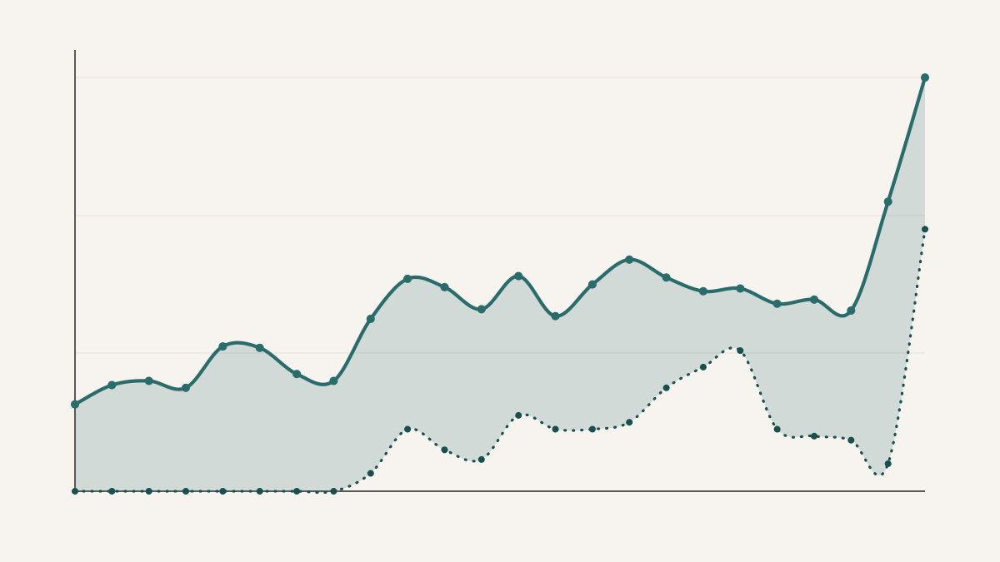

There is a very easy story to tell about English in K-pop. As the industry globalised, the songs became more English-heavy, and the more English songs presumably floated upward. It is a clean story. It is also only half true.
What interested me here was not just whether English usage had increased. That part was plausible before I opened the dataset. The more interesting question was whether English functioned as a measurable advantage inside the chart itself. If English had become a kind of commercial shorthand for global polish, one might expect it to show up not just historically but competitively: more English, better rank. The data do not give that clean answer.
The project begins with a simple measurement problem. "English in a song" sounds obvious until one tries to quantify it across tens of thousands of chart entries. A song might have a fully English hook and otherwise Korean verses. It might use isolated English phrases as style markers. It might switch within the line. So the analysis settles on a deliberately blunt but tractable unit: lyric lines. Each line is classified as English or not-English, and percent English is then defined as the fraction of lyric lines judged primarily English. It is not a perfect measure, but it is legible, scalable, and consistent enough to make the longer historical view possible.
What this made possible was a longitudinal scan across 25,876 chart-month entries from the Melon Monthly Top 100, covering 2000 through 2023. Each row is not just a song but a song in a particular chart month, which matters because chart presence is persistent: a hit can reappear for months. That means this is not a census of unique tracks. It is a record of what stayed visible, month after month, in the public ranking system. That distinction matters later, because the chart is measuring not just release activity but staying power, fandom behaviour, and timing.
The essay's backbone figure. The important feature is not merely that the mean rises; it is that the mean and median stay far apart for long stretches, which tells us the increase is being pulled upward by a growing tail of English-heavy songs rather than by a uniform shift across the whole chart.
The first clear result is historical. English usage rises over the full period, and rises especially hard in the later years. But the distribution is badly skewed. For many years the median sits near the floor even while the mean climbs, which is exactly what one would expect if most songs remained predominantly Korean while a smaller group became aggressively bilingual or almost fully English. By 2022, 13.42% of chart entries were above 50% English, and by 2023 that share had reached 28.22%. The increase is therefore not just a matter of more scattered English phrases. It reflects a genuine thickening of the English-heavy end of the distribution.
That distinction matters because it rescues the trend from a lazy interpretation. A rising average can be caused by a few outliers. Here, outliers are part of the story. K-pop's English turn does not look like a smooth cultural translation of the whole field. It looks more like the increasing chart presence of a subset of songs designed to operate comfortably across linguistic markets.
The genre split sharpens that picture. Genres tied to performance, hooks, and production-forward presentation carry more English. Dance/EDM shows mean and median values of 24.92% and 22.08%, while Rap/Hip-Hop sits at 18.52% and 13.83%. Ballad/OST, by contrast, is at 3.95% mean and 0.00% median. That median of zero is not subtle. It says that in the ballad-heavy part of the chart, Korean remains the default compositional language, even while the broader chart becomes more linguistically mixed.
I think this is one of the project's more useful corrective points. "K-pop" is too often treated as though it were a single stylistic object moving in one direction. It is not. The language story differs by genre because the function of language differs by genre. In a dance track, English can serve as percussive texture, hook architecture, or cosmopolitan signal. In a ballad, lyrics are carrying a different load. The chart is one system; the songs inside it are not.
The artist-level summaries push the same point in a more personified way. NewJeans averages 51.05% English across its charting entries. BLACKPINK sits at 44.55%, BTS at 37.76%. Those are not minor embellishments. They reflect catalogues in which English is often structural, not decorative. At the same time, the dataset includes non-Korean and Western pop entries, especially in the "Pop" bucket, which means any triumphalist claim that "K-pop itself became English" would be sloppy. Some of the late increase is absolutely entangled with what the chart is willing to host, not just what Korean idol music became internally.
And then there is the more interesting failure. The raw intuition that more English should mean better chart performance mostly collapses when you test it directly. Pearson's r is 0.0353. Spearman's rho is 0.0121, with the rank-based association missing conventional significance at p = 0.051. The dataset is large enough that tiny effects can produce impressive-looking p-values, but that is precisely why one has to ignore the theatre of small p-values and look at magnitude. English percentage alone explains very little about where a song lands on the chart.
This is not a disappointing result. It is the adult result. Charts are composite social objects. They fold together fandom, release timing, artist reputation, platform behaviour, competition within the month, and the basic fact that people like songs for reasons more complex than the proportion of their lines that happen to be in English. If the relationship had come out strong, I would have distrusted it.
Still, the story is not simply null.
The late rise matters more than the early flatness. For most of the period, English usage does not separate the Top 10 from the rest of the chart in any meaningful way; after 2020, it begins to do so intermittently, which suggests a recent shift in what top-charting visibility looks like rather than a timeless rule.
When the chart is split into Top 10 versus ranks 11–100, the effect size remains near zero for much of the early period and then strengthens after 2020. Cohen's d reaches 0.240 in 2020, 0.568 in 2021, 0.133 in 2022, and 0.427 in 2023. That is not overwhelming, but it is real enough to take seriously. The point is not that English suddenly became a master variable. It is that recent Top 10 songs appear more likely than the rest of the chart to come from the English-heavier tail.
That distinction between "not predictive overall" and "more common in recent top performers" is the essay's central hinge. English does not robustly order the whole chart. But in the contemporary period, some of the most visible songs are disproportionately likely to use it at high levels. Those are different claims, and collapsing them into one would be analytically lazy.
There are obvious limits. Line-level language detection misses mixed lines, slang, romanised Korean, and short fragments. Repeated chart appearances mean the dataset privileges persistence as well as presence. Genre labels are messy and sometimes internally inconsistent. None of that kills the result, but it does constrain what can be said cleanly.
If I were extending this project, I would push in exactly the place where the current result becomes most interesting: duration. Not whether English predicts rank in a static sense, but whether it predicts staying power. Does a heavily English song remain on the chart longer? Does it enter differently? Does the answer change once foreign pop entries are removed and the comparison is forced back onto Korean releases alone?
The broader point is that language in pop music is not just a linguistic variable. It is a design choice, a market signal, a genre convention, and sometimes just a hook that sounds good against the beat. What this dataset shows is that English in K-pop has unquestionably expanded, but its role is messier than the usual globalisation cliché allows. It changed the texture of the chart more clearly than it changed the logic of success.